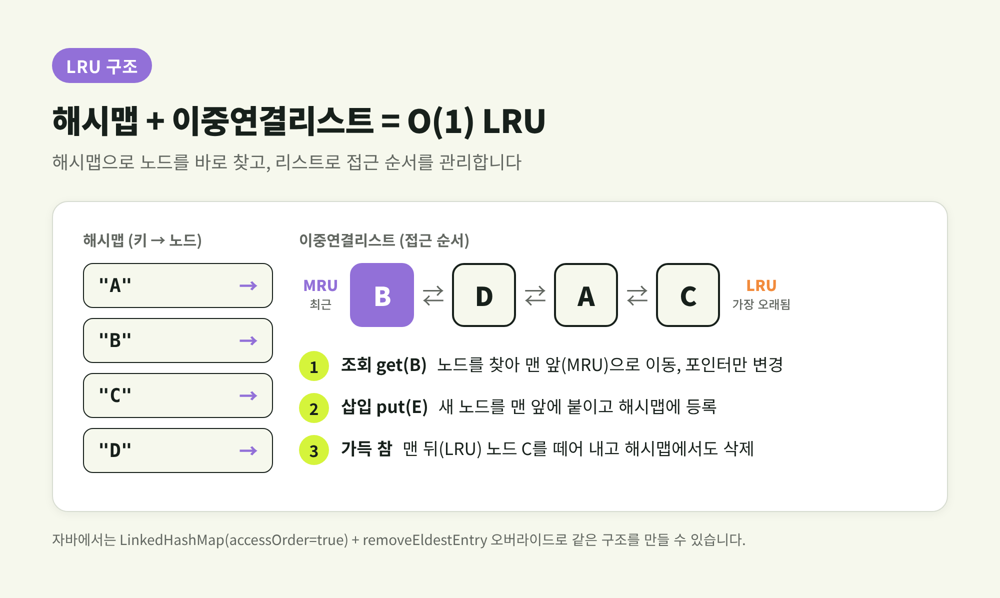
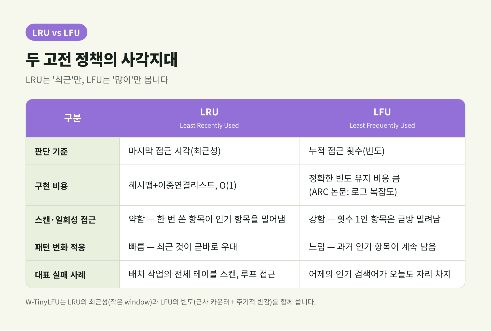
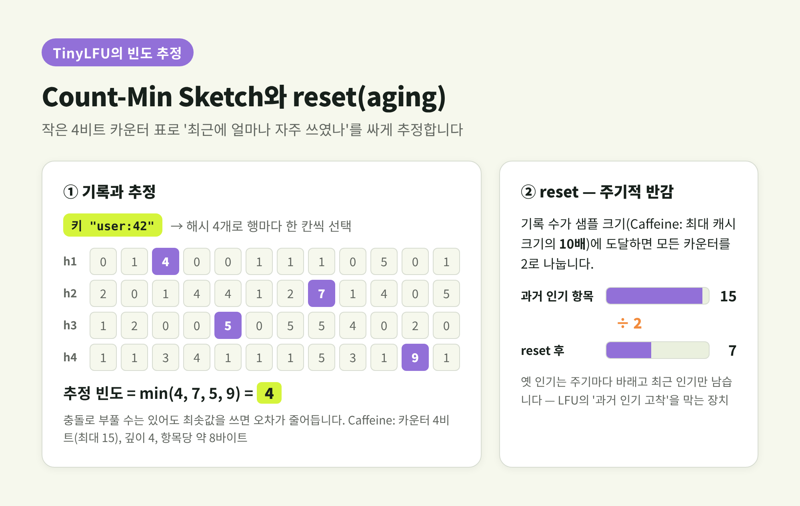
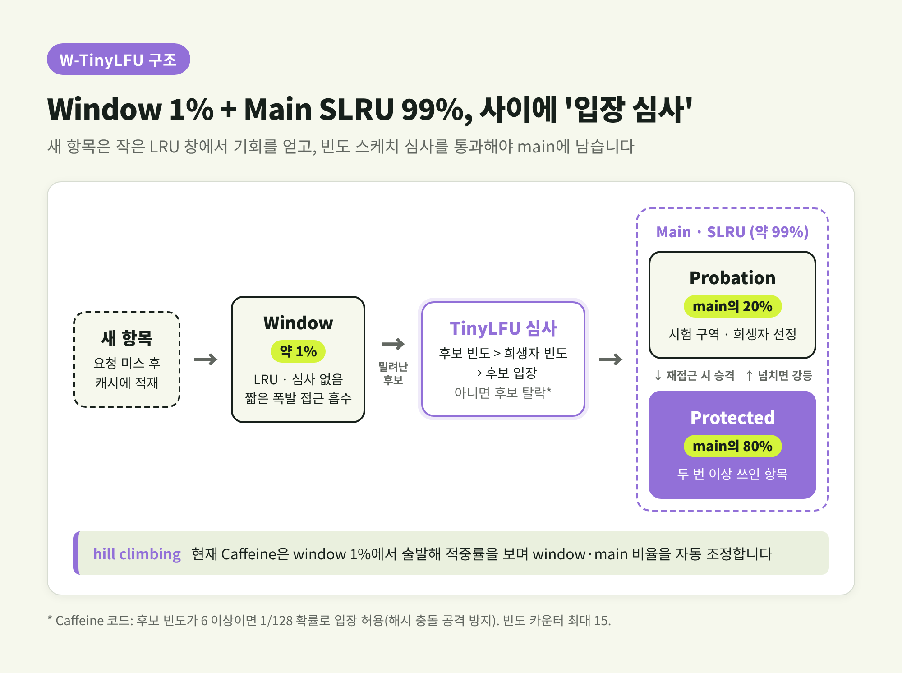
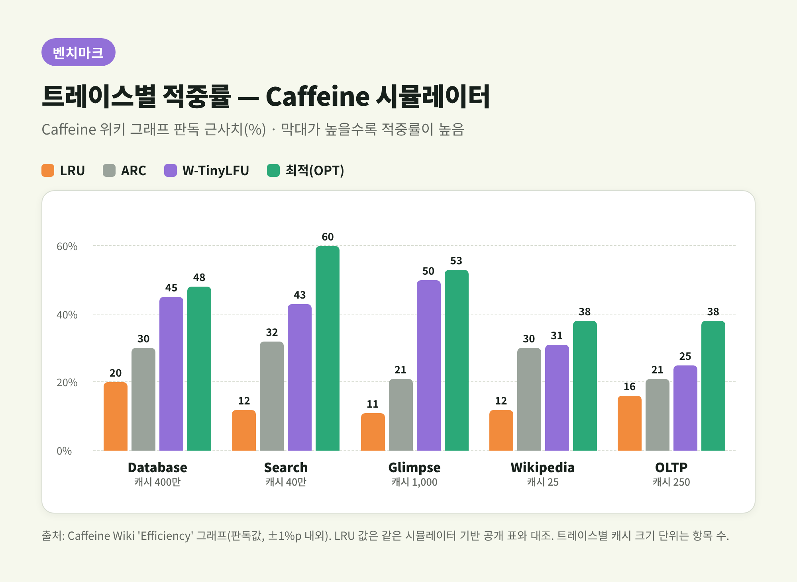

캐시 교체 정책 LRU·LFU·W-TinyLFU의 원리 — Caffeine은 왜 단순 LRU보다 적중률이 높을까

이번 글에서는 캐시 교체 정책의 대표 주자인 LRU, LFU, 그리고 W-TinyLFU의 원리를 정리해 보겠습니다. 스프링 부트에서 로컬 캐시로 자주 쓰이는 Caffeine이 왜 단순 LRU보다 높은 적중률을 내는지가 중심 질문입니다.
먼저 답부터 드리겠습니다.
- LRU는 "최근에 쓴 것"만 보고, LFU는 "많이 쓴 것"만 봅니다. 둘 다 한쪽 눈을 감고 있습니다.
- W-TinyLFU는 작은 LRU 창(window)으로 최근성을 받고, 4비트 빈도 스케치로 "들여보낼 가치가 있는가"를 따로 심사합니다.
- 그 결과 Caffeine 시뮬레이션에서 일부 워크로드는 LRU의 몇 배, 이론적 최적값에 가까운 적중률이 나옵니다.
■ 적중률, 그리고 무엇을 내보낼지의 문제
캐시는 공간이 한정되어 있습니다. 가득 찬 순간부터는 새 항목을 들일 때마다 누군가를 내보내야 합니다. 이 "누구를 내보낼까"를 정하는 규칙이 교체 정책(eviction policy)입니다.
성적표는 적중률(hit rate)입니다. Caffeine 문서는 이를 "요청 대비 적중의 비율"로 정의합니다. 적중률 몇 퍼센트 차이가 곧 DB 조회 횟수, 응답 지연, 서버 비용의 차이로 이어집니다.
비교의 기준점도 하나 있습니다. 미래의 요청을 모두 안다고 가정한 벨라디(Bélády)의 최적 정책입니다. 현실에서는 구현할 수 없지만, "여기까지가 천장"이라는 눈금 역할을 합니다. 뒤에서 볼 벤치마크도 모두 이 천장과 함께 그려져 있습니다.
참고로 캐시는 맵과 비슷해 보여도 본질이 다릅니다. Caffeine 문서의 표현을 빌리면, ConcurrentMap은 넣은 것을 지울 때까지 간직하지만 캐시는 메모리를 제한하기 위해 항목을 스스로 내보냅니다. 결국 캐시의 품질은 "무엇을 버리느냐"에서 갈립니다.
■ LRU — 해시맵과 이중연결리스트로 만드는 O(1)
LRU(Least Recently Used)는 가장 오래 쓰지 않은 항목을 내보냅니다. 단순하고, 많은 상황에서 꽤 잘 맞습니다.
구현은 두 자료구조의 조합입니다.
- 해시맵: 키로 노드를 바로 찾습니다.
- 이중연결리스트: 노드를 접근 순서대로 줄 세웁니다.
조회가 일어나면 해당 노드를 리스트 맨 앞으로 옮깁니다. 캐시가 차면 맨 뒤 노드를 떼어 냅니다. 앞뒤 포인터만 바꾸면 되니 조회·삽입·삭제가 모두 O(1)입니다.

자바라면 직접 짤 필요도 없습니다.
LinkedHashMap은 모든 엔트리를 잇는 이중연결리스트를 내장하고 있고, 접근 순서 모드(accessOrder=true) 생성자를 두고 있습니다.
공식 문서도 이 모드가 "LRU 캐시를 만들기에 적합하다"고 적고 있습니다.
removeEldestEntry를 오버라이드해 size() > 100일 때 true를 반환하면, 항목 100개를 유지하는 LRU가 완성됩니다.
다만 실전에서는 함정이 있습니다. LRU에서는 읽기도 쓰기가 됩니다. 조회할 때마다 리스트를 재배치해야 하므로, 여러 스레드가 동시에 읽으면 리스트 하나를 두고 다투게 됩니다. Caffeine은 이를 읽기 기록을 링 버퍼에 모아 두었다가 한꺼번에 반영하는 방식으로 풉니다. 버퍼가 넘치면 일부 기록을 버리기도 하는데, 개발자 벤 메인스(Ben Manes)는 이것이 적중률에 의미 있는 영향을 주지 않는다고 설명합니다.
■ LRU와 LFU, 각자의 사각지대
LRU의 약점은 "최근"만 본다는 데 있습니다. Caffeine 위키는 LRU가 일반적인 워크로드에서 최적이 아니며, 전체 스캔 같은 상황에서 적중률이 나빠질 수 있다고 적습니다.
예를 들어 배치 작업이 테이블 전체를 한 번 훑는다고 해 보겠습니다. 다시 쓰일 일 없는 항목들이 차례로 들어오며 리스트 앞자리를 차지합니다. 그동안 하루 종일 사랑받던 인기 항목은 뒤로 밀려 쫓겨납니다. 이것이 스캔 오염입니다. 한 번 보고 마는 일회성 접근도 같은 방식으로 캐시를 흐립니다.
그렇다면 접근 횟수를 세는 LFU(Least Frequently Used)는 어떨까요. 스캔에는 강합니다. 한 번 들른 항목은 횟수가 1이라 금방 밀려나기 때문입니다. 하지만 다른 문제가 생깁니다.
- 과거 인기 고착: ARC 논문(Megiddo·Modha, 2003)은 LFU가 최근 이력을 거의 고려하지 않고, 접근 패턴이 바뀌어도 빈도가 높았던 낡은 항목이 캐시에 남는다고 지적합니다. 어제의 인기 검색어가 오늘도 자리를 지키는 셈입니다.
- 카운터 비용: 같은 논문은 LFU의 구현 복잡도가 캐시 크기에 로그 비례한다고 봅니다. 정확한 최근 빈도 이력을 유지하려면 TinyLFU 논문 추산으로 항목당 약 99바이트가 든다고 합니다.

예전에는 이 둘 중 하나를 고르고 단점을 감수했습니다. 지금은 둘을 섞되, 비용을 아주 작게 만드는 쪽으로 발전했습니다. 그 출발점이 TinyLFU입니다.
■ TinyLFU — 내보낼 대상이 아니라 들일 자격을 묻다
TinyLFU는 길 아인치거(Gil Einziger), 로이 프리드먼(Roy Friedman), 그리고 Caffeine 개발자 벤 메인스가 함께 쓴 논문의 주인공입니다. 2015년 arXiv에 공개되었고, 2017년 ACM Transactions on Storage에 실렸습니다.
발상의 전환은 이것입니다. "누구를 내보낼까"보다 "이 새 항목을 들일 가치가 있을까"를 먼저 묻습니다. 즉 교체 정책이 아니라 진입 허가(admission) 정책입니다.
판단은 간단합니다. 새로 들어오려는 후보와 쫓겨날 차례인 희생자의 최근 빈도를 비교합니다. 후보가 더 자주 쓰였을 때만 들입니다. 스캔으로 한 번 스쳐 간 항목은 빈도가 낮아 문턱을 넘지 못합니다.
문제는 빈도를 어떻게 싸게 세느냐입니다. 여기서 Count-Min Sketch가 등장합니다.
- 카운터가 깔린 작은 표를 두고, 해시 함수 여러 개로 항목마다 칸을 하나씩 고릅니다.
- 접근할 때 고른 칸들을 모두 1씩 올립니다.
- 빈도를 물을 때는 그 칸들 중 최솟값을 답합니다. 다른 항목과 충돌해 부풀 수는 있어도, 최솟값을 쓰면 오차가 줄어듭니다.
Caffeine의 구현은 더 짠합니다. 소스 코드 주석에 따르면 카운터는 4비트라 최댓값이 15입니다. long 하나에 카운터 16개를 담고, 깊이는 4로 고정합니다. 한 항목의 카운터들을 64바이트 블록, 즉 CPU L1 캐시 라인 하나에 몰아 넣어 메모리 접근을 보통 한 번으로 끝냅니다. Caffeine 위키는 이 스케치가 캐시 항목당 8바이트 정도로 자란다고 적습니다.

그럼 LFU의 고질병인 과거 인기 고착은 어떻게 막을까요. 답은 reset, 즉 노화(aging)입니다. 논문은 기록한 샘플 수가 정해진 크기 W에 이르면 모든 카운터를 2로 나눕니다. Caffeine 코드에서는 이 샘플 크기가 최대 캐시 크기의 10배입니다. 옛 인기는 주기마다 절반씩 바래고, 최근의 인기만 또렷하게 남습니다.
공간을 더 아끼는 장치도 있습니다. 논문은 카운터 앞에 블룸 필터 하나를 문지기(Doorkeeper)로 둡니다. 처음 보는 항목은 1비트만 차지하게 하는 방식입니다. 논문의 비교 실험에서는 단순 구현 대비 메모리를 약 89% 줄였습니다.
■ W-TinyLFU — 1% 창과 SLRU로 완성한 구조
순수 TinyLFU에도 빈틈이 있었습니다. 짧게 몰렸다 사라지는 접근, 논문의 표현으로 "드문 폭발(sparse bursts)"입니다. 갓 들어온 항목은 빈도를 쌓기도 전에 문턱에서 거절당합니다. 그래서 앞에 작은 대기실을 붙였습니다. 이것이 W-TinyLFU(Window TinyLFU)입니다.

구조는 세 칸으로 나뉩니다.
- Window(용량의 약 1%): 평범한 LRU입니다. 새 항목은 일단 여기로 들어와 심사 없이 머뭅니다.
- Probation(main의 20%): window에서 밀려난 항목이 시험을 치르는 곳입니다.
- Protected(main의 80%): probation에서 한 번 더 접근된 항목이 승격되는 곳입니다. 이곳이 가득 차면 밀린 항목은 probation으로 강등됩니다.
심사는 window와 probation 사이에서 일어납니다. window에서 밀려난 후보와 probation의 희생자를 빈도 스케치로 비교해, 더 자주 쓰인 쪽만 남깁니다. Caffeine 코드를 보면 후보의 빈도가 더 높을 때 받아들이고, 그렇지 않더라도 빈도가 6 이상인 후보는 128분의 1 확률로 들여보냅니다. 해시 충돌을 노린 공격으로 인기 항목이 계속 거절되는 일을 막기 위한 안전장치입니다.
비율은 고정이 아닙니다. 논문과 초기 Caffeine은 window를 1%로 고정했지만, 현재 Caffeine은 1%에서 출발해 언덕 오르기(hill climbing)로 조정합니다. 적중률을 표본으로 재고, 좋아지면 같은 방향으로, 나빠지면 반대로 window 크기를 움직입니다. 보폭은 점점 줄여 최적점 근처에 자리를 잡고, 적중률이 크게 흔들리면 다시 탐색합니다. 이 방식은 2018년 Middleware 학회 논문 「Adaptive Software Cache Management」에서 다뤄졌습니다.
효과는 극적인 실험으로 확인됩니다. 메인스는 최근성 위주의 트레이스와 빈도 위주의 루프 트레이스를 이어 붙인 워크로드를 돌렸습니다. 적응형 W-TinyLFU는 전체 적중률 39.6%로 최적값 40.3%에 바짝 붙었습니다. ARC, LIRS, 그리고 window를 고정한 W-TinyLFU는 모두 20% 이하였습니다. 그래프를 보면 최근성 구간에서는 window가 60% 가까이 커지고, 빈도 구간에서는 0% 근처까지 줄어듭니다.
■ 숫자로 본 적중률 — Caffeine 시뮬레이터 결과
Caffeine 위키는 실제 트레이스로 여러 정책을 비교한 그래프를 공개합니다. 아래 값은 그 그래프에서 읽은 근사치입니다. LRU 값은 같은 시뮬레이터로 측정한 별도 공개 자료와 대조해 일치함을 확인했습니다.

| 트레이스(캐시 크기) | LRU | ARC | W-TinyLFU | 최적 |
|---|---|---|---|---|
| Database, ERP DB (400만) | 약 20% | 약 30% | 약 45% | 약 48% |
| Search, 검색엔진 디스크 (40만) | 약 12% | 약 32% | 약 43% | 약 60% |
| Glimpse, 루프 패턴 (1,000) | 약 11% | 약 21% | 약 50% | 약 53% |
| Wikipedia, 요청 10% (25) | 약 12% | 약 30% | 약 31% | 약 38% |
| OLTP, CODASYL DB (250) | 약 16% | 약 21% | 약 25% | 약 38% |
눈에 띄는 대목이 몇 있습니다.
- 루프가 있는 Glimpse에서 LRU는 11% 안팎에 머무는데, W-TinyLFU는 50% 근처로 최적값에 거의 닿습니다. 루프는 LRU의 가장 나쁜 상대입니다.
- Database 트레이스에서도 W-TinyLFU는 LRU의 두 배 이상이며 최적선과 몇 %p 차이입니다.
- ARC 논문 자체의 표에서도 LRU의 한계는 분명합니다. SPC1 유사 벤치마크 4GB 캐시에서 LRU 9.19%, ARC 20.00%였습니다.
물론 만능은 아닙니다. OLTP처럼 최근성이 강한 트레이스에서는 ARC와 W-TinyLFU의 차이가 거의 없습니다. 같은 시뮬레이터 기반의 다른 비교에서는 일부 트레이스(F1)에서 W-TinyLFU가 LRU보다 낮게 나온 경우도 있습니다. 캐시 크기가 아주 커지면 정책 간 격차도 줄어듭니다. Wikipedia 트레이스의 200 구간에서는 LRU가 약 42%, W-TinyLFU가 약 53%입니다.
■ 다른 정책들 — ARC, CLOCK, 그리고 Redis
W-TinyLFU만 답은 아닙니다. 다른 계열도 같은 문제를 각자의 방식으로 풉니다.
ARC(Adaptive Replacement Cache). IBM 연구진이 2003년 FAST 학회에서 발표했습니다. 한 번 본 항목 목록과 두 번 이상 본 항목 목록을 따로 두고, 최근 쫓겨난 키만 기억하는 "유령 목록"을 함께 운영합니다. 유령 목록에서 다시 요청이 오면 두 목록의 목표 크기를 조정해 최근성과 빈도의 균형을 스스로 맞춥니다. 대신 캐시 크기의 두 배만큼 키를 기억해야 하고, Caffeine 위키에 따르면 IBM 특허 때문에 라이선스가 필요합니다.
CLOCK. 1969년 페르난도 코르바토(Fernando J. Corbató)가 처음 기술한, 운영체제 페이지 교체의 고전입니다. 항목을 원형으로 늘어놓고 시곗바늘이 돕니다. 참조 비트가 1이면 0으로 지우고 한 번 더 기회를 주며, 0이면 교체합니다. 리스트를 재배치하지 않아 동시성에 유리하지만, Caffeine 위키는 최악의 경우 O(n)이 될 수 있다고 짚습니다. 변형인 CLOCK-Pro는 최근 내보낸 페이지 정보까지 유지해 큰 루프와 일회성 스캔에서 LRU보다 낫다고 알려져 있습니다.
Redis의 근사 LRU·LFU.
Redis는 메모리를 아끼려고 정확한 LRU를 쓰지 않습니다.
redis.conf 설명에 따르면 기본적으로 키 5개를 무작위로 뽑아 가장 오래 안 쓴 것을 내보냅니다.
3.0부터는 좋은 후보를 풀에 모아 두어 진짜 LRU에 가까워졌습니다.
maxmemory-samples를 10으로 올리면 진짜 LRU에 매우 가까워지지만 CPU를 더 씁니다.
LFU 모드는 4.0부터 제공됩니다.
키마다 8비트 카운터를 두고, 확률적으로만 올립니다.
증가 확률은 1/(현재값 × lfu-log-factor + 1)이라, 기본값 10에서 100번 접근하면 카운터가 10, 1,000번이면 18, 100만 번이면 255로 포화됩니다.
새 키는 5에서 시작해 적중을 쌓을 기회를 얻고, lfu-decay-time(기본 1분)에 따라 카운터가 줄어듭니다.
감쇠라는 점에서 TinyLFU의 reset과 같은 고민을 담고 있습니다.
한 가지 더, Redis의 기본 maxmemory-policy는 noeviction입니다. 캐시로 쓸 생각이라면 정책을 직접 지정해야 합니다.
| 정책 | 무엇을 보나 | 장점 | 한계 |
|---|---|---|---|
| LRU | 최근성 | 단순, O(1) | 스캔·루프에 취약 |
| LFU | 빈도 | 스캔에 강함 | 과거 인기 고착, 카운터 비용 |
| ARC | 최근성+빈도(자동 조정) | 스캔 저항, 적응형 | 키 2배 기억, 특허 |
| CLOCK | 참조 비트 | 동시성 유리 | 최악 O(n), LRU 근사 |
| Redis LRU/LFU | 샘플링 근사 | 메모리 절약 | 정밀도는 샘플 수에 좌우 |
| W-TinyLFU | 최근성(window)+빈도(sketch) | 최적에 근접, 항목당 약 8바이트 | 일부 최근성 위주 트레이스에서 우위 적음 |
■ 스프링 부트에서 Caffeine 쓸 때 챙길 것
흔히 "스프링 캐시 기본 구현은 Caffeine"이라고 말하지만, 정확히는 조금 다릅니다.
스프링 부트는 정해진 순서(Generic, JCache, Hazelcast, Infinispan, Couchbase, Redis, Caffeine, Cache2k, Simple)로 공급자를 찾고, Caffeine이 클래스패스에 있으면 CaffeineCacheManager를 자동 구성합니다.
아무 라이브러리도 없으면 ConcurrentHashMap 기반 Simple 캐시가 쓰이고, 공식 문서는 이를 운영용으로 권하지 않습니다.
크기 제한도, 교체 정책도 없는 맵이기 때문입니다.
Caffeine은 스프링 부트 1.5 시절 문서에서 이미 "2.0에서 Guava 지원을 대체할" 구현으로 소개되었습니다.
설정은 프로퍼티 두 줄이면 시작할 수 있습니다.
spring.cache.cache-names=products,users
spring.cache.caffeine.spec=maximumSize=10000,expireAfterWrite=10m,recordStats
실무에서 놓치기 쉬운 지점을 정리하면 다음과 같습니다.
- maximumSize는 반드시 둡니다. 이 값이 있어야 W-TinyLFU가 일을 합니다. 빈도 스케치도 이 크기를 기준으로 잡히고, 샘플 크기는 그 10배가 됩니다. 항목 크기가 제각각이면
maximumWeight와weigher를 쓰되, 가중치는 생성·갱신 시점에 한 번 계산된다는 점을 기억해 두시면 좋겠습니다. - expireAfterWrite와 expireAfterAccess를 구분합니다. 앞의 것은 생성 또는 마지막 갱신 기준이라 시간이 지나면 낡는 데이터에 맞습니다. 뒤의 것은 마지막 읽기·쓰기 기준이라 세션처럼 비활동 시 만료할 데이터에 맞습니다. 스프링 부트 문서 예시는
expireAfterAccess=600s에 "time to live 10분"이라는 설명을 붙여 두었는데, 자주 조회되는 항목은 영영 만료되지 않을 수 있으니 의도를 확인하시길 권합니다. - refreshAfterWrite로 지연을 숨깁니다. Caffeine 위키 예시는
expireAfterWrite5분에refreshAfterWrite1분을 겹칩니다. 1분이 지난 항목은 다음 조회 때 비동기로 다시 읽어 오고, 그동안은 기존 값을 돌려줍니다. 다만 refresh는 값을 다시 읽어 올CacheLoader가 있어야 동작하고, 스프링 부트에서는 이 로더 빈이 모든 캐시에 공통으로 연결됩니다. - 만료는 "정각"에 일어나지 않습니다. 만료 처리는 쓰기 중 유지보수와 가끔의 읽기 때 수행됩니다. 즉시 제거가 중요하다면
Scheduler.systemScheduler()같은 스케줄러를 지정해야 합니다. - 적중률은 측정해야 보입니다.
recordStats를 켜면hitRate(),evictionCount(),averageLoadPenalty()를 볼 수 있습니다. 액추에이터는 시작 시점에 존재하는 캐시를cache접두어 메트릭으로 계측하지만, 라이브러리 쪽 통계가 켜져 있어야 하고 나중에 동적으로 만든 캐시는CacheMetricsRegistrar로 따로 등록해야 합니다. - @EnableCaching은 설정 클래스에 둡니다. 스프링 부트 문서는 메인 애플리케이션 클래스에 붙이면 테스트에서도 캐시가 강제된다며 피하라고 권합니다.
정리하면 이렇습니다. LRU는 최근성 하나로 빠르고 단순하지만, 스캔과 루프 앞에서 무너집니다. LFU는 빈도를 보지만, 과거에 묶이고 비쌉니다. W-TinyLFU는 1%의 창으로 새 얼굴에 기회를 주고, 4비트 카운터와 주기적 반감으로 "지금 인기 있는 것"만 골라 남깁니다.
Caffeine이 강한 이유를 한 줄로 줄이면 이렇습니다. "내보낼 대상을 고르기 전에, 들일 자격부터 묻는다."
물론 정책은 워크로드를 이기지 못합니다. 최근성 위주의 트레이스에서는 차이가 작고, 어떤 경우엔 LRU가 낫기도 합니다.
그래서 결국 recordStats로 직접 재 보는 수밖에 없습니다.
그래도 어떤 로컬 캐시로 시작하겠냐고 물으신다면, 저는 maximumSize 한 줄을 적은 Caffeine부터 권하겠습니다.
참고자료
- Einziger·Friedman·Manes, TinyLFU: A Highly Efficient Cache Admission Policy (arXiv, ACM TOS 2017)
- Caffeine Wiki — Efficiency
- Caffeine 소스 — FrequencySketch.java
- Caffeine 소스 — BoundedLocalCache.java
- Ben Manes, Design Of A Modern Cache (High Scalability, 2016)
- Ben Manes, Design Of A Modern Cache—Part Deux (High Scalability, 2019)
- Einziger·Eytan·Friedman·Manes, Adaptive Software Cache Management (Middleware 2018)
- Megiddo·Modha, ARC: A Self-Tuning, Low Overhead Replacement Cache (USENIX FAST '03)
- Redis Docs — Key eviction
- redis.conf (Redis GitHub)
- Spring Boot Reference — Caching
- Spring Boot Reference — Metrics
- Caffeine Wiki — Eviction · Refresh · Statistics
- Oracle Java SE 21 — LinkedHashMap
- Wikipedia — Page replacement algorithm
- dw-cache README (Caffeine 시뮬레이터 기반 LRU 수치)